HINDURCH is a dance-theatre project about the Russian invasion of Ukraine, created by Tamara Maksymenko and Thomas Mettler in 2022, almost immediately after the full-scale invasion began.
At its core, HINDURCH is a one-hour solo performance carried by Tamara Maksymenko as the main and constant performer. Through movement, voice, and physical presence, a Ukrainian woman tells her personal story — and the stories of her friends — who were confronted with the outbreak of full-scale war. It is a work about dark times, about rupture and survival, about healing, and about political awareness. In this piece, a Ukrainian woman speaks directly about politics and about the painful recognition that history repeats itself.
Although structured as a solo, HINDURCH partially developed as an adaptive piece. In every city, it included additional artists — musicians, singers, and in one scene an additional dancer — coming from different countries. Each location brought new collaborators and new constellations of performers: different artists in Innsbruck each time, different ones in Vienna, and different ones in Istanbul. This shifting artistic community became part of the project’s living structure.
The performance was presented four times in Innsbruck, three times in Istanbul, and twice in Vienna. After each show, conversations with the audience were an essential part of the project, creating space for dialogue, reflection, and shared processing of collective trauma.
At its heart, HINDURCH tells the story of a young woman who once woke up and found herself an old woman— because war knocked on her door. Or rather, it did not knock. It broke the doors down...
Solo Performer/Co-creator: Tamara Maksymenko (Ukraine)
Additional performers: Olha Holoborodko (Ukraine), Dmytry Usov (Russia), Dmytry Vikhrov (Ukraine), Thomas Mettler (Switzerland), Christian Lechner (Austria)
Director: Thomas Mettler (Switzerland)
Music: Laurie Anderson, Sophie Zelmani, DakhaBrakha, Lilly Palmer
Voice: Olha Bescherstnaya (Ukraine), Olena Stanishevska (Ukraine)
Musicians: Valentin Katelevsky (Ukraine), Denis Karachevtsev (Ukraine)
Crowdfunding
If you would like to support this project, welcome on the crowdfunding source: hindurch-dance-theatre-project
Photo Gallery
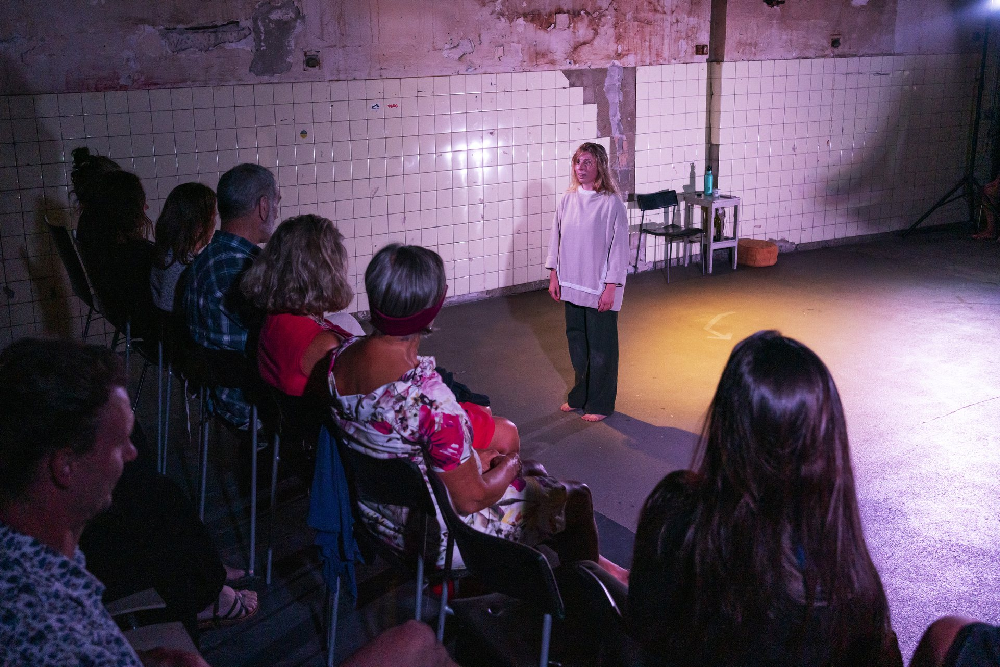
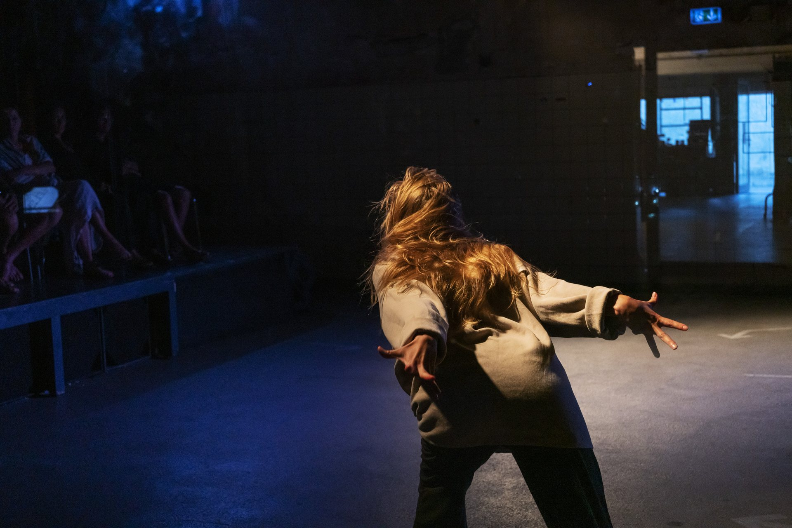
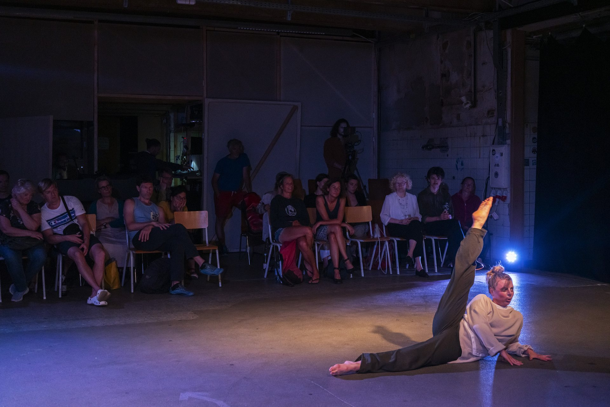
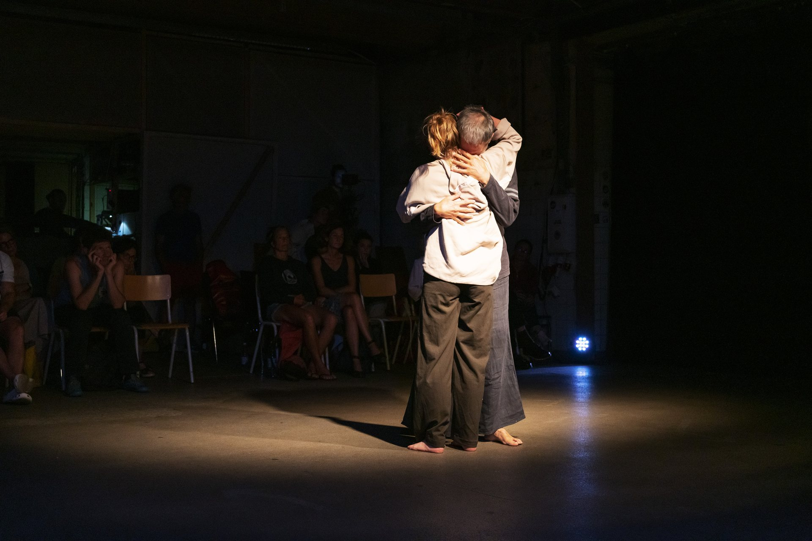
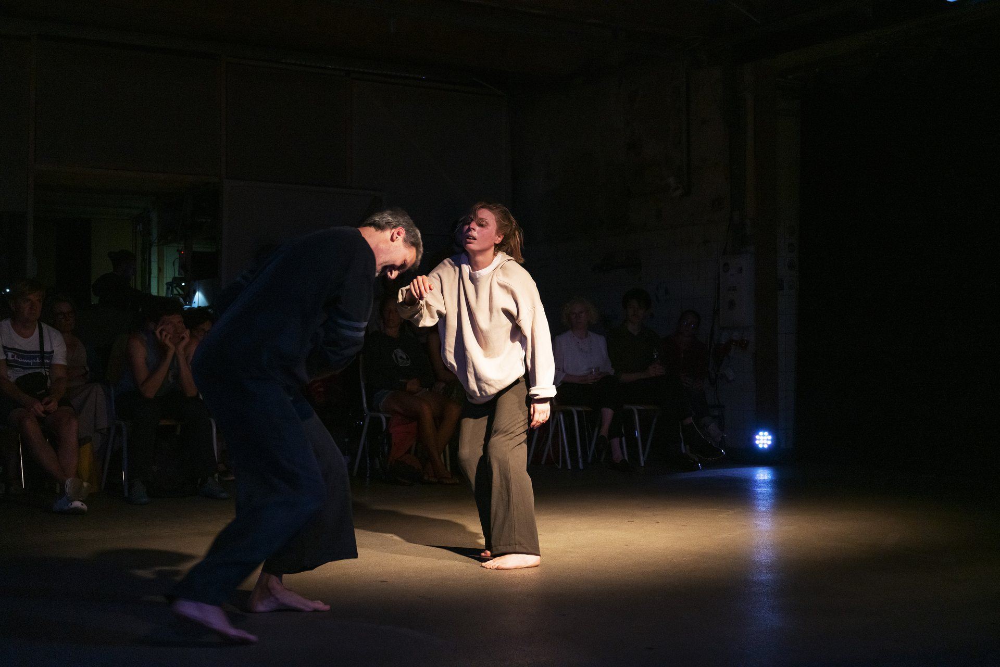
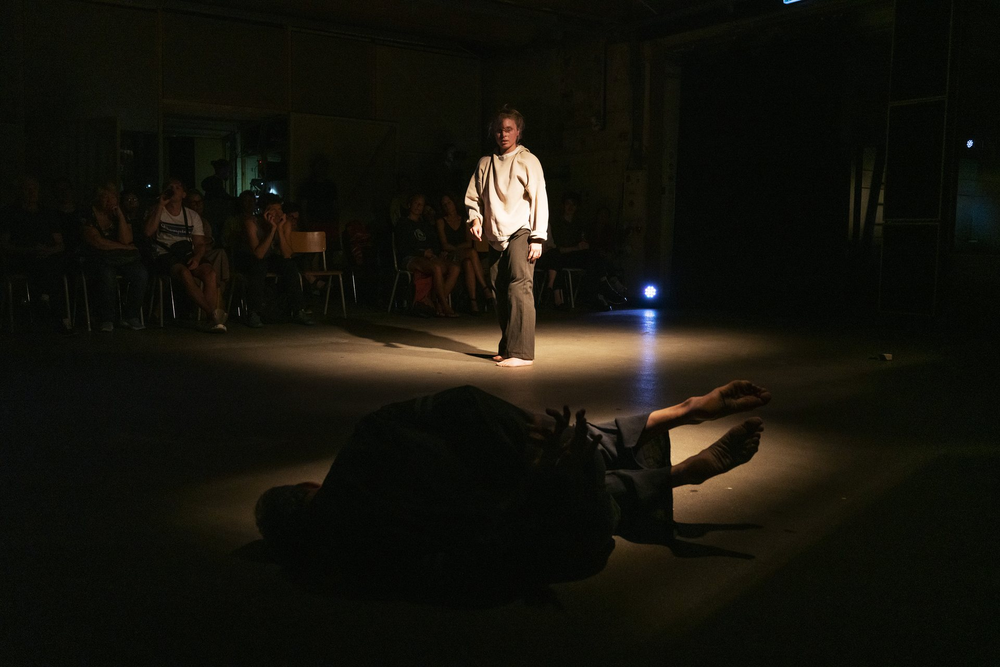
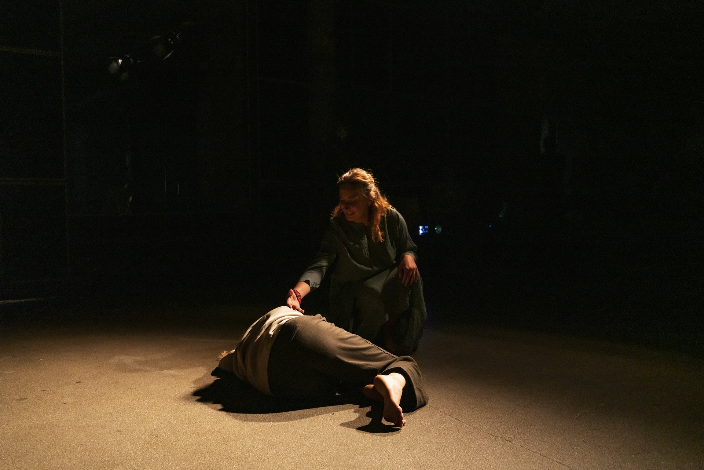
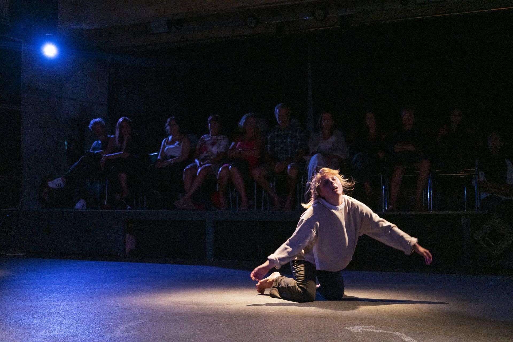
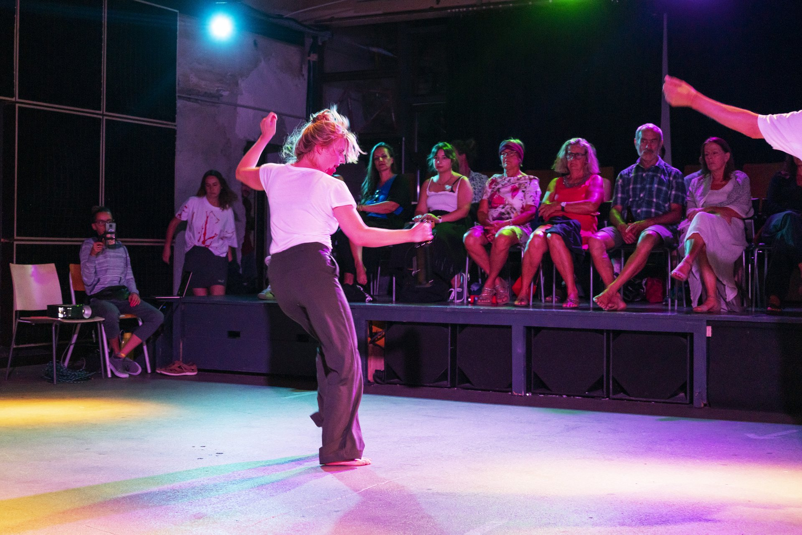
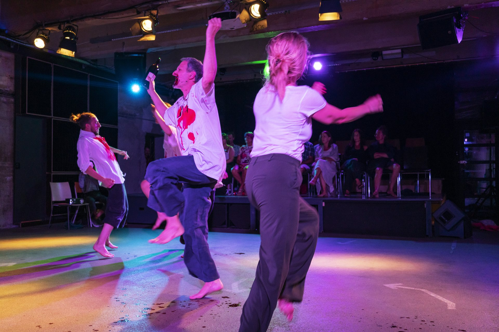
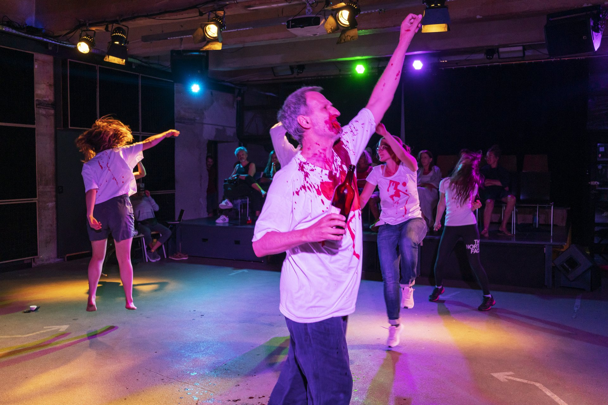
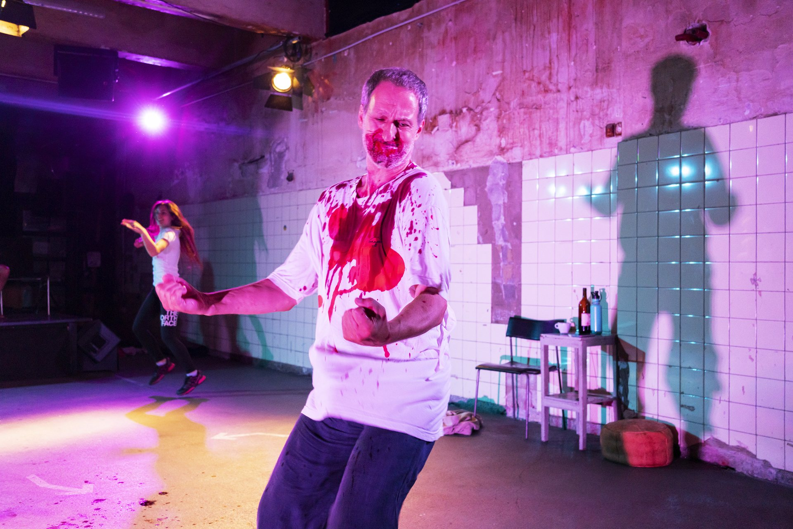
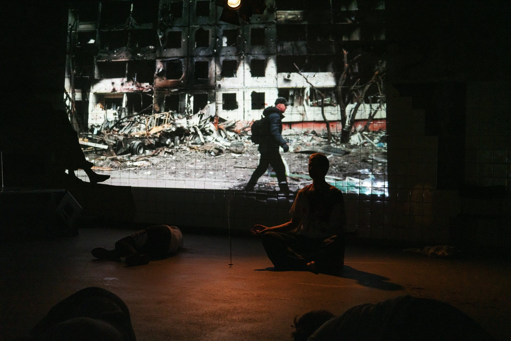
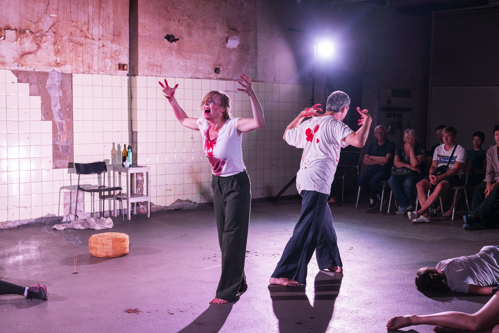
Partners